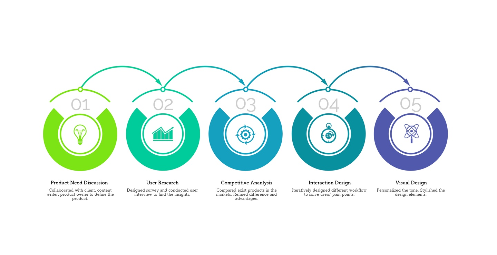

People getting busy, sometimes busy can cause problems. Like you will forget to take your medicine.
One of our clients came to our agency mentioned they need an App could help people to remember taking their medicine. They mentioned the target audiences are busy workers and the old, so the interface should be as easy as possible.
Compared to other solutions like native apps, chatbot messenger seems carter to what we need. It’s easier to handle because of simple interaction. Based on the Facebook messenger platform, developers can implement it much faster than others.
Process

Key Insights
1. Users not only forget taking their medicine, they also forget bringing their medicine to the office or carry with them.
2. They need repeatedly reminder in case they are in the meeting or cannot take them immediately when they received the reminder.
3. Some of the medicine conflict with other stuff like food or need some special care.
4. Users need some reminders to refill the medicine.
5. A lot of people used medicine box to remind them to take medicine on time.